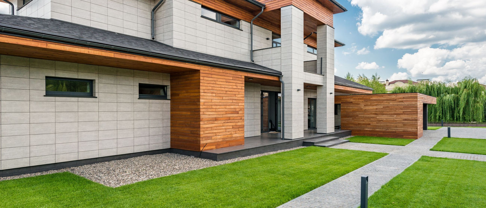

Krycie dachów płaskich
Nowe pokrycie od podłoża po obróbki: warstwa paroizolacji, termoizolacja ze spadkami, hydroizolacja, attyki i wpusty.
Przejdź do opisu →
Od nowego pokrycia i termomodernizacji, przez tarasy i balkony, po pojedynczą obróbkę, która zaczęła puszczać wodę.
Każdy z tych obszarów ma własną podstronę z opisem materiałów, przebiegu prac i sytuacji, w których się sprawdza.
Nowe pokrycie od podłoża po obróbki: warstwa paroizolacji, termoizolacja ze spadkami, hydroizolacja, attyki i wpusty.
Przejdź do opisu →
Izolacja pod okładziną, powłoka użytkowa, odwodnienie liniowe i obróbka progu drzwi balkonowych.
Przejdź do opisu →
Znalezienie miejsca przecieku, naprawa punktowa albo warstwa renowacyjna na całą połać, gdy stare pokrycie się sypie.
Przejdź do opisu →Ta sama robota co na dachu, tylko po drugiej stronie budynku. Izolacja pionowa masami KMB albo membraną, ochrona mechaniczna przed zasypaniem wykopu, drenaż opaskowy i wyprowadzenie warstwy na cokół. Wchodzimy zarówno przy budynkach w budowie, jak i przy istniejących, gdzie trzeba odkopać ścianę odcinkami.
Na dachu płaskim rzadko przecieka środek połaci. Problem prawie zawsze siedzi w miejscu, gdzie pokrycie się kończy albo coś je przebija.
Wyprowadzenie pokrycia na murek ogniowy, kliny przy styku połaci ze ścianą, listwy dociskowe i obróbki blacharskie czapki attyki.
Wymiana kołnierzy wpustów, montaż koszy zabezpieczających przed liśćmi oraz przelewów, którymi woda schodzi, gdy wpust się zatka.
Uszczelnienie miejsc, w których przez pokrycie przechodzą rury wentylacyjne, przewody instalacji oraz ramy świetlików i klap dymowych.
Uformowanie spadku na płaskiej płycie tak, by woda schodziła do wpustów, zamiast stać przez tydzień na środku połaci.
Dołożenie warstwy izolacji na istniejącą połać razem z nowym pokryciem, gdy strop ucieka ciepłem, a papa i tak nadaje się do wymiany.
Pokrycia na podłożach innych niż beton: hale na blasze trapezowej, wiaty i przybudówki na deskowaniu albo płycie OSB.
Dwie połacie o tej samej powierzchni potrafią różnić się ceną o połowę. Decyduje o tym stan starego pokrycia, liczba przebić, wysokość attyk, dojazd i to, czy da się pracować z poziomu dachu, czy potrzebny jest podnośnik.
Dlatego najpierw przyjeżdżamy i oglądamy. Podczas oględzin sprawdzamy warstwy, wilgotność izolacji, spadki i drożność wpustów. Dopiero na tej podstawie podajemy zakres, cenę i termin.

Opisz przez telefon, co się dzieje. Jeśli sprawa wymaga wejścia na dach, umówimy oględziny na najbliższy wolny termin.